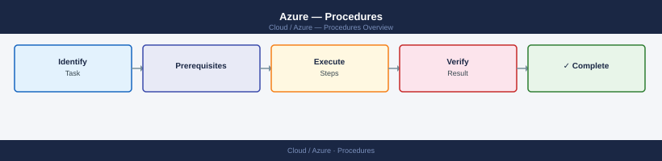

Azure — Procedures¶

direction: right
hub: "Azure\nOperations" {shape: hexagon}
azure_operations_change_flow: "Azure Operations Change Flow" {shape: rectangle}
runbook_templates: "Runbook Templates" {shape: rectangle}
azure_automation: "Azure Automation" {shape: rectangle}
create_a_virtual_machine_azure_cli: "Create a Virtual Machine (Azure CLI)" {shape: rectangle}
resize_a_virtual_machine: "Resize a Virtual Machine" {shape: rectangle}
create_and_attach_a_managed_disk: "Create and Attach a Managed Disk" {shape: rectangle}
hub -> azure_operations_change_flow
hub -> runbook_templates
hub -> azure_automation
hub -> create_a_virtual_machine_azure_cli
hub -> resize_a_virtual_machine
hub -> create_and_attach_a_managed_disk
Before you begin¶
- Access: Admin credentials on all affected systems
- Timing: safe to run during business hours unless a step is marked ⚠ (causes interruption)
- Dependencies: no active upgrades or migrations on the same infrastructure
- Logging: capture command output — paste into the change record on completion
Azure Operations Change Flow¶
flowchart LR
changeReq["Change Request\napproved in ITSM"]
preCheck["Pre-change Checks\nResource health · backups · snapshots"]
mainWindow["Maintenance Window\nnotify stakeholders"]
change["Execute Change\nCLI / Portal / IaC"]
validate["Post-change Validation\nhealth · connectivity · metrics"]
outcome{"Successful?"}
closeChange["Close Change Record\ndocument outcomes"]
rollback["Rollback\nrestore snapshot · redeploy"]
changeReq --> preCheck --> mainWindow --> change --> validate --> outcome
outcome -- Yes --> closeChange
outcome -- No --> rollback --> closeChangeRunbook Templates¶
A standard structure for Azure operational runbooks. Copy this template for any planned change, maintenance window, or incident response procedure.
Runbook Metadata¶
Fill in this section before every runbook is executed.
| Field | Value |
|---|---|
| Runbook Title | |
| Owner | |
| Secondary Contact | |
| Date / Change Window | |
| Change Request ID | |
| Risk Level | Low / Medium / High |
| Estimated Duration | |
| Rollback Possible? | Yes / No |
| Approval Sign-off |
# Confirm current subscription before starting
az account show --query "{Subscription:name, ID:id}" --output table
# Confirm operator identity
az ad signed-in-user show --query "userPrincipalName" --output tsv
Pre-Checks¶
Validate the environment is in the expected state before making any changes.
# Verify resource group exists
az group show --name <rg-name> --query "properties.provisioningState" --output tsv
# Check current VM power state
az vm show \
--resource-group <rg-name> \
--name <vm-name> \
--show-details \
--query "powerState" --output tsv
# Verify disk is not currently attached to another VM
az disk show \
--resource-group <rg-name> \
--name <disk-name> \
--query "diskState" --output tsv
# Check resource locks that might block the operation
az lock list --resource-group <rg-name> --output table
# Take a snapshot before destructive operations
az snapshot create \
--resource-group <rg-name> \
--name <snapshot-name> \
--source <disk-id>
Pre-check checklist:
| Check | Expected Result | Actual Result | Pass/Fail |
|---|---|---|---|
| Subscription active | Enabled | ||
| Target resource exists | Present | ||
| No conflicting resource locks | None | ||
| Snapshot/backup taken | Completed | ||
| Downstream dependencies notified | Confirmed |
Step-by-Step Procedure¶
Number each step. Record the actual command run and its output.
Step 1 — Stop the workload (if required)¶
az vm deallocate \
--resource-group <rg-name> \
--name <vm-name> \
--no-wait
# Wait for deallocated state
az vm wait \
--resource-group <rg-name> \
--name <vm-name> \
--custom "instanceView.statuses[?code=='PowerState/deallocated']"
Step 2 — Apply the change¶
# Example: resize a VM
az vm resize \
--resource-group <rg-name> \
--name <vm-name> \
--size Standard_D4s_v3
# Example: update a tag
az resource update \
--ids <resource-id> \
--set tags.env=prod
# Example: attach a new managed disk
az vm disk attach \
--resource-group <rg-name> \
--vm-name <vm-name> \
--name <disk-name>
Step 3 — Restart and verify¶
az vm start \
--resource-group <rg-name> \
--name <vm-name>
az vm show \
--resource-group <rg-name> \
--name <vm-name> \
--show-details \
--query "powerState" --output tsv
Rollback Procedure¶
Document the exact reversal steps. If rollback is not possible, state the reason.
# Example: revert VM size
az vm resize \
--resource-group <rg-name> \
--name <vm-name> \
--size Standard_D2s_v3
# Example: restore disk from snapshot
az disk create \
--resource-group <rg-name> \
--name <restored-disk-name> \
--source <snapshot-id>
# Example: delete a newly created resource
az resource delete --ids <resource-id> --yes
Rollback decision criteria:
| Condition | Action |
|---|---|
| VM fails to start after resize | Revert to original SKU |
| Application health check fails | Restore from snapshot |
| Performance degradation > 20% | Rollback and escalate |
| Change window exceeded | Stop, rollback, reschedule |
Validation¶
Run these checks after the procedure to confirm success.
# Confirm new VM size
az vm show \
--resource-group <rg-name> \
--name <vm-name> \
--query "hardwareProfile.vmSize" --output tsv
# Confirm VM is running
az vm get-instance-view \
--resource-group <rg-name> \
--name <vm-name> \
--query "instanceView.statuses[1].displayStatus" --output tsv
# Check activity log for errors in the last hour
az monitor activity-log list \
--resource-group <rg-name> \
--start-time $(date -u -d '1 hour ago' +%Y-%m-%dT%H:%M:%SZ) \
--query "[?level=='Error'].{Time:eventTimestamp, Op:operationName.value, Status:status.value}" \
--output table
Sign-Off Checklist¶
| Item | Confirmed By | Time |
|---|---|---|
| Change applied successfully | ||
| Validation checks passed | ||
| Monitoring confirms no alerts | ||
| Snapshot/backup cleaned up (if temp) | ||
| Change request closed | ||
| Stakeholders notified |
Azure Automation¶
Azure Automation — runbook automation, update management, configuration management (DSC), and change tracking.
Key Capabilities¶
| Capability | Description |
|---|---|
| Runbooks | PowerShell, Python, or Graphical workflows |
| Update Management | Automated OS patching across Azure and on-premises VMs |
| Change Tracking | Track software, file, registry, and service changes |
| DSC (State Config) | Desired State Configuration for VM compliance |
| Shared resources | Credentials, variables, schedules, connections, modules |
Common Azure CLI Commands¶
# List automation accounts
az automation account list \
--query '[*].{Name:name,RG:resourceGroup,Location:location,State:state}' -o table
# List runbooks
az automation runbook list -g <rg> --automation-account-name <aa-name> \
--query '[*].{Name:name,Type:runbookType,State:state,Modified:lastModifiedTime}' -o table
# Start a runbook job
az automation job create -g <rg> --automation-account-name <aa-name> \
--runbook-name <runbook-name> \
--parameters '{"param1":"value1"}'
# List recent jobs for a runbook
az automation job list -g <rg> --automation-account-name <aa-name> \
--query '[?runbook.name==`<runbook-name>`].{ID:jobId,Status:status,Start:startTime,End:endTime}' -o table
# Get job output
az automation job get-output -g <rg> --automation-account-name <aa-name> \
--id <job-id>
# List schedules
az automation schedule list -g <rg> --automation-account-name <aa-name> \
--query '[*].{Name:name,Enabled:isEnabled,Frequency:frequency,NextRun:nextRun}' -o table
Update Management¶
# List VMs onboarded to Update Management
az automation software-update-configuration list -g <rg> --automation-account-name <aa-name> \
--query '[*].{Name:name,Schedule:scheduleInfo.frequency,Included:updateConfiguration.azureVirtualMachines}' -o table
# View update assessment results
az automation software-update-configuration machine-run list \
-g <rg> --automation-account-name <aa-name> \
--filter "status eq 'Failed'" \
--query '[*].{VM:targetComputerId,Status:status,Failed:softwareUpdateConfigurationName}' -o table
Runbook Example — Restart Azure VM¶
param(
[string]$ResourceGroupName,
[string]$VMName
)
# Use system-assigned managed identity (no stored credentials needed)
Connect-AzAccount -Identity
$vm = Get-AzVM -ResourceGroupName $ResourceGroupName -Name $VMName
if ($vm.PowerState -eq "VM running") {
Restart-AzVM -ResourceGroupName $ResourceGroupName -Name $VMName
Write-Output "Restarted VM: $VMName"
} else {
Write-Output "VM $VMName is not in running state: $($vm.PowerState)"
}
Hybrid Runbook Worker¶
For running runbooks against on-premises systems:
# List hybrid worker groups
az automation hybrid-runbook-worker-group list -g <rg> --automation-account-name <aa-name> \
--query '[*].{Name:name,Type:groupType}' -o table
Troubleshooting¶
| Symptom | Check | Action |
|---|---|---|
| Runbook job failing | Job output / exception | az automation job get-output — check error details |
| Authentication failure in runbook | Managed identity assigned? | Assign automation account managed identity a role on the target resource |
| Scheduled job not running | Schedule enabled? | Verify schedule isEnabled=true; check next run time |
| Update Management not scanning VM | Log Analytics agent | Verify MMA/AMA agent is healthy and workspace matches automation account |
| Hybrid Runbook Worker offline | Worker process | Restart HybridRunbookWorkerService on the on-premises host |
Create a Virtual Machine (Azure CLI)¶
# Set common variables
RG=my-resource-group
LOCATION=uksouth
VM=my-vm-01
# Create the resource group if it does not exist
az group create --name $RG --location $LOCATION
# Create the VM
az vm create \
--resource-group $RG \
--name $VM \
--image Ubuntu2204 \
--size Standard_D2s_v3 \
--admin-username azureuser \
--ssh-key-values ~/.ssh/id_rsa.pub \
--vnet-name my-vnet \
--subnet my-subnet \
--nsg my-nsg \
--public-ip-sku Standard \
--tags Env=prod Owner=ops
# Verify the VM is running
az vm show -g $RG -n $VM \
--show-details \
--query '{Name:name,State:powerState,IP:publicIps,PrivateIP:privateIps}' \
-o table
Common --size options:
| Series | Use case |
|---|---|
| Standard_B2s | Dev/test, burstable |
| Standard_D2s_v3 | General purpose |
| Standard_F4s_v2 | CPU-intensive |
| Standard_E4s_v3 | Memory-intensive |
Resize a Virtual Machine¶
RG=my-resource-group
VM=my-vm-01
# --- Step 1: Check available sizes in the VM's current region/zone ---
az vm list-vm-resize-options \
--resource-group $RG \
--name $VM \
--query '[].name' -o table
# --- Step 2: Deallocate (stop + release compute) ---
az vm deallocate \
--resource-group $RG \
--name $VM
# Wait for deallocated state
az vm wait \
--resource-group $RG \
--name $VM \
--custom "instanceView.statuses[?code=='PowerState/deallocated']"
# --- Step 3: Resize ---
az vm resize \
--resource-group $RG \
--name $VM \
--size Standard_D4s_v3
# --- Step 4: Start ---
az vm start \
--resource-group $RG \
--name $VM
# Confirm new size
az vm show \
--resource-group $RG \
--name $VM \
--query "hardwareProfile.vmSize" -o tsv
If the target size is unavailable in the current cluster, Azure may move the VM to a new host during resize. Confirm the application restarts cleanly after the resize.
Create and Attach a Managed Disk¶
RG=my-resource-group
VM=my-vm-01
DISK=data-disk-01
# Get the AZ of the target VM (disk must match)
AZ=$(az vm show -g $RG -n $VM --query 'zones[0]' -o tsv)
# Create a Premium SSD managed disk
az disk create \
--resource-group $RG \
--name $DISK \
--size-gb 256 \
--sku Premium_LRS \
--zone $AZ \
--tags Purpose=data Owner=ops
# Attach to the VM
az vm disk attach \
--resource-group $RG \
--vm-name $VM \
--name $DISK
# --- In-guest: extend partition (SSH into the VM) ---
# List block devices
lsblk
# Partition and format the new disk (example: /dev/sdc)
sudo parted /dev/sdc --script mklabel gpt mkpart primary xfs 0% 100%
sudo mkfs.xfs /dev/sdc1
# Mount
sudo mkdir -p /data
sudo mount /dev/sdc1 /data
# Persist across reboots
echo '/dev/sdc1 /data xfs defaults,nofail 0 2' | sudo tee -a /etc/fstab
# Verify disk is visible on the VM
az vm show -g $RG -n $VM \
--query 'storageProfile.dataDisks[].{Name:name,LUN:lun,SizeGB:diskSizeGb,SKU:managedDisk.storageAccountType}' \
-o table
Create a Network Security Group Rule¶
RG=my-resource-group
NSG=my-nsg
# Inbound rule — allow HTTPS from anywhere
az network nsg rule create \
--resource-group $RG \
--nsg-name $NSG \
--name Allow-HTTPS-Inbound \
--priority 100 \
--direction Inbound \
--access Allow \
--protocol Tcp \
--source-address-prefixes '*' \
--source-port-ranges '*' \
--destination-address-prefixes '*' \
--destination-port-ranges 443
# Inbound rule — allow SSH from a specific IP range
az network nsg rule create \
--resource-group $RG \
--nsg-name $NSG \
--name Allow-SSH-CorpNet \
--priority 110 \
--direction Inbound \
--access Allow \
--protocol Tcp \
--source-address-prefixes 10.0.0.0/8 \
--destination-port-ranges 22
# Outbound rule — deny internet egress for sensitive VMs
az network nsg rule create \
--resource-group $RG \
--nsg-name $NSG \
--name Deny-Internet-Outbound \
--priority 4000 \
--direction Outbound \
--access Deny \
--protocol '*' \
--source-address-prefixes 'VirtualNetwork' \
--destination-address-prefixes Internet \
--destination-port-ranges '*'
# Verify current rules
az network nsg rule list \
--resource-group $RG \
--nsg-name $NSG \
--query '[].{Name:name,Priority:priority,Dir:direction,Access:access,Protocol:protocol,DestPort:destinationPortRange}' \
-o table
Priority rules: lower number = higher priority. Range is 100–4096. Azure evaluates rules in priority order and stops at the first match.
Configure Azure Backup for a VM¶
VAULT=my-recovery-vault
RG=my-resource-group
VM=my-vm-01
POLICY=DefaultPolicy
# Create Recovery Services vault (if not existing)
az backup vault create \
--resource-group $RG \
--name $VAULT \
--location uksouth
# List available backup policies
az backup policy list \
--resource-group $RG \
--vault-name $VAULT \
--query '[].name' -o table
# Enable backup protection for the VM
az backup protection enable-for-vm \
--resource-group $RG \
--vault-name $VAULT \
--vm $VM \
--policy-name $POLICY
# Verify protection status
az backup item show \
--resource-group $RG \
--vault-name $VAULT \
--container-name "iaasvmcontainerv2;$RG;$VM" \
--name "vm;iaasvmcontainerv2;$RG;$VM" \
--backup-management-type AzureIaasVM \
--query '{VM:properties.friendlyName,Status:properties.protectionStatus,LastBackup:properties.lastBackupTime}' \
-o table
# Trigger an on-demand backup
az backup protection backup-now \
--resource-group $RG \
--vault-name $VAULT \
--container-name "iaasvmcontainerv2;$RG;$VM" \
--item-name "vm;iaasvmcontainerv2;$RG;$VM" \
--backup-management-type AzureIaasVM \
--retain-until 2025-12-31
Set Up Azure Monitor Alert¶
RG=my-resource-group
VM=my-vm-01
# Get the VM resource ID
VM_ID=$(az vm show -g $RG -n $VM --query id -o tsv)
# Create an action group (email notification target)
az monitor action-group create \
--resource-group $RG \
--name ops-email-group \
--short-name opsalerts \
--action email ops-lead ops-lead@example.com
# Get action group resource ID
AG_ID=$(az monitor action-group show -g $RG -n ops-email-group --query id -o tsv)
# Create a metrics alert — CPU > 80% for 5 minutes
az monitor metrics alert create \
--name "High-CPU-$VM" \
--resource-group $RG \
--scopes $VM_ID \
--condition "avg Percentage CPU > 80" \
--window-size 5m \
--evaluation-frequency 1m \
--severity 2 \
--description "CPU utilisation exceeded 80% for 5 minutes" \
--action $AG_ID
# Create a metrics alert — Available Memory < 1 GB
az monitor metrics alert create \
--name "Low-Memory-$VM" \
--resource-group $RG \
--scopes $VM_ID \
--condition "avg Available Memory Bytes < 1073741824" \
--window-size 5m \
--evaluation-frequency 1m \
--severity 2 \
--action $AG_ID
# Verify alerts
az monitor metrics alert list \
--resource-group $RG \
--query '[].{Name:name,Severity:severity,Enabled:enabled,Condition:criteria.allOf[0].metricName}' \
-o table
Severity levels: 0 (Critical) → 1 (Error) → 2 (Warning) → 3 (Informational) → 4 (Verbose).
Create a Storage Account and Container¶
RG=my-resource-group
SA=mystorageacct$RANDOM # must be globally unique, 3-24 lowercase alphanumeric
CONTAINER=app-data
# Create storage account
az storage account create \
--resource-group $RG \
--name $SA \
--location uksouth \
--kind StorageV2 \
--sku Standard_LRS \
--access-tier Hot \
--min-tls-version TLS1_2 \
--allow-blob-public-access false \
--https-only true
# Get the storage account key
SA_KEY=$(az storage account keys list -g $RG -n $SA --query '[0].value' -o tsv)
# Create a private blob container
az storage container create \
--name $CONTAINER \
--account-name $SA \
--account-key $SA_KEY \
--public-access off
# Enable blob versioning
az storage account blob-service-properties update \
--resource-group $RG \
--account-name $SA \
--enable-versioning true
# Verify
az storage account show \
--resource-group $RG \
--name $SA \
--query '{Name:name,SKU:sku.name,Kind:kind,AccessTier:accessTier,HTTPS:supportsHttpsTrafficOnly}' \
-o table
az storage container list \
--account-name $SA \
--account-key $SA_KEY \
--query '[].{Name:name,LeaseState:properties.leaseState,PublicAccess:properties.publicAccess}' \
-o table
| SKU | Replication | Use case |
|---|---|---|
| Standard_LRS | 3x within one datacenter | Dev/test, low cost |
| Standard_ZRS | 3x across availability zones | Zone-resilient |
| Standard_GRS | LRS + async copy to paired region | Regional DR |
| Premium_LRS | SSD-backed, low latency | High-throughput workloads |
Configure Entra ID (Azure AD) Group and Role Assignment¶
RG=my-resource-group
# --- Step 1: Create a security group in Entra ID ---
az ad group create \
--display-name "Platform-Ops-Team" \
--mail-nickname "platform-ops-team" \
--description "Azure platform operations team — prod subscription access"
# Get the group object ID
GROUP_ID=$(az ad group show --group "Platform-Ops-Team" --query id -o tsv)
# --- Step 2: Add members to the group ---
USER_ID=$(az ad user show --id user@example.com --query id -o tsv)
az ad group member add --group "Platform-Ops-Team" --member-id $USER_ID
# --- Step 3: Assign a built-in RBAC role at subscription scope ---
SUB_ID=$(az account show --query id -o tsv)
az role assignment create \
--assignee-object-id $GROUP_ID \
--assignee-principal-type Group \
--role "Contributor" \
--scope "/subscriptions/$SUB_ID"
# --- Step 4: Assign a role at resource group scope (more restrictive) ---
az role assignment create \
--assignee-object-id $GROUP_ID \
--assignee-principal-type Group \
--role "Virtual Machine Contributor" \
--scope "/subscriptions/$SUB_ID/resourceGroups/$RG"
# Verify role assignments for the group
az role assignment list \
--assignee $GROUP_ID \
--query '[].{Role:roleDefinitionName,Scope:scope}' \
-o table
Common built-in roles:
| Role | Scope of access |
|---|---|
| Owner | Full access including role assignments |
| Contributor | Full CRUD except role assignments |
| Reader | Read-only |
| Virtual Machine Contributor | Create/manage VMs, not the VNet or Storage |
| Storage Blob Data Contributor | Read/write blob data (not account management) |
Verify¶
- Confirm the operation completed without errors in the log or management UI
- Verify the expected state change is visible (service running, object created, config applied)
- Document the outcome in the change record